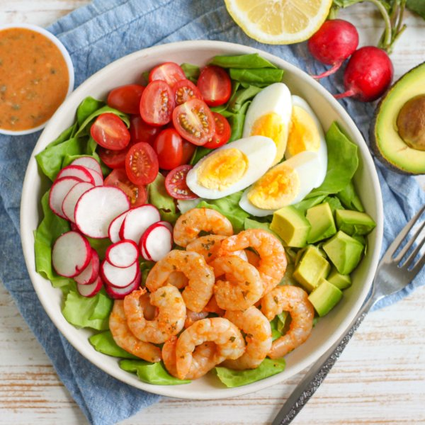

Shrimp Louie Salad with Hard-Boiled Egg, Lettuce, Avocado & Tomato

Prep Time
35 min
Nutrition (per serving)
578 kcalCalories
32.9 gProtein
28.1 gCarbs
39 gFat
Full nutrition table
| Calories | 578 kcal |
| Total fat | 39 g |
| Saturated fat | 6.7 g |
| Trans fat | 0.1 g |
| Cholesterol | 387.1 mg |
| Sodium | 1260.2 mg |
| Carbohydrates | 28.1 g |
| Fiber | 7.1 g |
| Sugars | 14.9 g |
| Protein | 32.9 g |
| Potassium | 1098.9 mg |
| Calcium | 189 mg |
| Iron | 3.7 mg |
| Vitamin A | 1333.5 IU |
| Vitamin C | 37.8 mg |
| Vitamin D | 41.3 IU |
Cookware
Ingredients
- 1avocado
- 2 headsbutter (Boston) lettuce
- 2 tbspcapers
- 4eggs
- 1 pintgrape tomatoes
- 2lemons
- 1 bunchradish
- 1 ½ lbraw peeled shrimp, fresh or frozen
- black pepper
- chili-garlic sauce
- extra virgin olive oil
- garlic powder
- honey
- ketchup
- mayonnaise
- paprika
- parsley flakes
- salt
- Worcestershire sauce
Steps
- Place eggs in a small saucepan, cover with water, and bring to a boil. Reduce heat to a simmer and cook for 8 minutes. Drain hot water and add ice or run under cold water to cool; set aside.4 eggs
- Meanwhile, wash and dry the fresh produce.2 lemons
1 bunch radish
1 pint grape tomatoes
1 avocado
2 heads butter (Boston) lettuce - Zest and juice lemons into a small bowl; add oil, honey, chili-garlic sauce, Worcestershire, and spices. Whisk to combine the sauce.¼ cup extra virgin olive oil
4 tsp honey
2 tsp chili-garlic sauce
2 tsp Worcestershire sauce
2 tsp garlic powder
2 tsp paprika
2 tsp parsley flakes
1 tsp salt
½ tsp black pepper - If using frozen shrimp, place them in the colander and run under cold water to thaw them slightly and remove any ice crystals. (If using fresh shrimp, skip this step.) Place the shrimp on a clean towel or paper towels and pat dry.1 ½ lb raw peeled shrimp, fresh or frozen
- Preheat a large skillet over medium-high heat.
- While the skillet heats up, place shrimp in a medium bowl, drizzle with half of the sauce, and toss to coat. (Reserve remaining sauce for later use.)
- Once the skillet is hot, working in batches if necessary, add shrimp in a single layer (along with any sauce left in the bowl); cook until opaque, 1-2 minutes per side. Remove to a plate and set aside to cool slightly.
- Meanwhile, roughly chop capers; add to the bowl with the remaining sauce along with mayo and ketchup. Whisk to combine the creamy dressing and set aside.2 tbsp capers
¼ cup mayonnaise
¼ cup ketchup - Trim and thinly slice radishes; place on another plate.
- Halve tomatoes and add to the plate with the radish.
- Peel and quarter eggs; add to the plate.
- Halve and pit avocado; scoop out with a spoon and medium dice the flesh. Add to the plate.
- Chop or tear lettuce into bite-sized pieces.
- Divide lettuce between plates or bowls; top with radish, tomato, egg, avocado, and shrimp. Serve with creamy dressing on the side and enjoy!